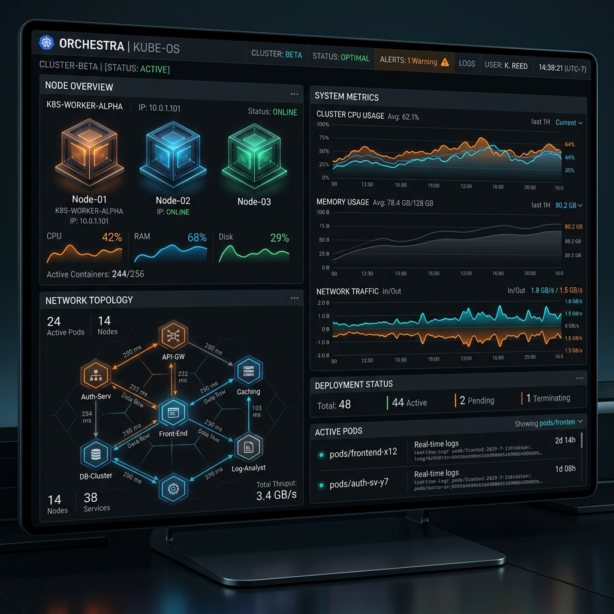

DockOps connects directly to your host's Docker socket via Node.js and TypeScript. Control Compose stacks, visualize real-time topologies, and trigger encrypted registry credentials and rules-based alerting without deploying heavy proxy containers.

Toggle Nginx or Postgres configurations, and trigger deployment actions or system failures. Watch the active networks, port maps, and alerting webhooks process live!
Concrete Docker capabilities backed by strict validations, secure cryptography, and telemetry collectors.
DockOps validates Compose YAML configurations locally using the `docker compose config` command before any deployment is initialized. If valid, the backend uses Node.js `spawn` process controls to execute Compose tasks asynchronously. If a build fails, the platform rolls back databases and notifies users immediately.
Secure private image pulling without risk. Credentials for Docker Hub, GHCR, or custom registries are encrypted with authenticated AES-256-GCM algorithms using a 32-byte hash symmetric key from your `.env` configuration. The decrypted credentials never leave backend RAM and are never sent to the client.
Ditch static tables. The platform queries active networks, gateways, and subnets directly from Docker. The topological visualizer represents the real-time layout showing bridge channels connected to container nodes and their allocated internal IP addresses.
{
"event": "alert_triggered",
"rule": "Postgres RAM Exceeded",
"container": "dockops-postgres-dev",
"metric": "MEMORY",
"value": "92.4%",
"severity": "CRITICAL",
"timestamp": "2026-08-03T13:58:35Z",
"webhook_target": "DISCORD"
}
Monitor your containers dynamically. A background daemon polls container resource utilization every 30 seconds, saving logs to PostgreSQL and cleaning old metric data automatically. If CPU or memory values cross user-configured thresholds, or if a container stops unexpectedly, the alerting rules engine dispatches JSON payloads to Discord or Slack webhook URLs.
DockOps connects directly to your local Docker socket via Node.js using the Dockerode SDK. It executes lifecycle requests inside the host system, completely eliminating intermediate layers or third-party daemon interfaces.
Follow these steps to pull, configure database schema, and spin up DockOps locally.
# Clone the repository git clone https://github.com/shaw0p/Dock0ps.git cd Dock0ps # Spin up Postgres development database container docker compose -f docker-compose.dev.yml up -d # Install backend packages and run migrations cd backend npm install npx prisma generate npx prisma migrate dev --name init_milestone3 # Run backend dev server (starts on port 4000) npm run dev